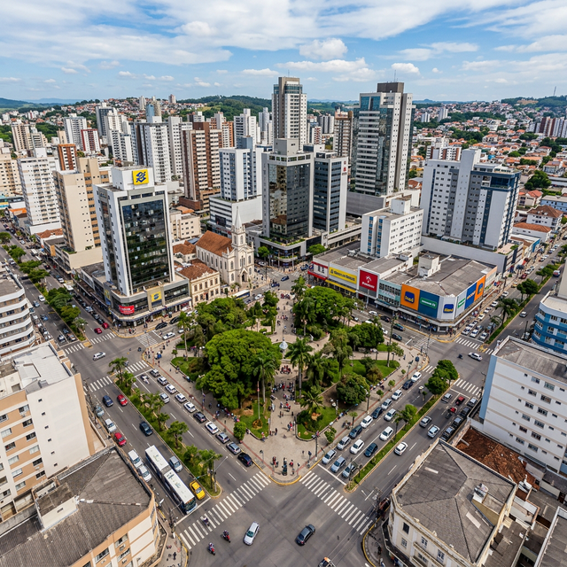

O Berço da Indústria no Sul de Santa Catarina
Se você olhar para trás, entenderá imediatamente que o desenvolvimento econômico de Criciúma não aconteceu por acaso ou por favorecimentos geográficos fáceis. A cidade foi forjada no calor das caldeiras, na profundidade das minas e no suor implacável dos seus fundadores. O carvão ditou o ritmo inicial. Era um cenário hostil que exigia resiliência absoluta. O IBGE relata o crescimento demográfico vertiginoso que a cidade viveu justamente impulsionado por esta primeira onda industrial. Criciúma não apenas existia; ela alimentava o motor do Brasil.
Mas depender de um único extrativismo é uma armadilha que já arruinou muitas regiões globais. O que separa Criciúma de cidades decadentes é a agilidade intelectual e comercial dos seus empresários. Quando o ciclo do carvão começou a desacelerar, o capital não fugiu; ele pivotou e se multiplicou em novas indústrias: de cerâmicas revolucionárias a descartáveis, da extração bruta à manufatura de precisão e exportação massiva.

A Transição de Matriz Econômica: Uma Aula Prática de Pivotagem
Nenhuma cidade sobrevive sem se reinventar, mas a virada de chave no Sul Catarinense é o que eu chamo de "masterclass" de visão panorâmica. Hoje, Criciúma figura não apenas como um vestígio histórico do carvão, mas orgulha-se de sustentar o poderoso polo industrial do Sul Catarinense. Estamos falando de marcas gigantes nascidas e criadas nestas ruas. Nomes de peso no cenário nacional de plásticos, tintas, cerâmicas e vestuário que decidiram manter suas raízes no Sul.
A transição foi implacável e acelerada. O antigo pó preto das ruas deu lugar a maquinários alemães, robótica e processos de logística de ponta. Isso exige dinheiro, coragem e, acima de tudo, uma visão de longo prazo sobre as oportunidades de negócios em SC. Os empresários locais entenderam cedo que a escalabilidade industrial exige diversificação de portfólio. A cidade aprendeu a exportar valor agregado, não apenas comodities. O resultado? Um PIB industrial que dita as rédeas do sul do país.
A Cultura de Trabalho Forte do Criciumense: O Fator Crítico de Sucesso
Existe um ditado comum por aqui, quase um mantra sussurrado nas mesas de reunião: "o criciumense não sabe o que é trabalhar pouco". A matriz cultural formada por imigrantes – predominantemente italianos, mas fortalecida por alemães, poloneses, espanhóis, portugueses e africanos – forjou um ecossistema onde o respeito só é garantido pela execução impecável.
Não há atalhos no DNA desta região. É arregaçar as mangas, investir o capital de volta na operação e abrir vantagem sobre a concorrência através de qualidade bruta e persistência tática. A história empresarial de Criciúma está pavimentada de fundadores que começaram no fundo das minas, tornaram-se proprietários de frota e, duas gerações depois, dominam conselhos de administração em corporações nacionais. Quando você olha para as startups e empresas de tecnologia surgindo na cidade, você vê a mesma agressividade comercial, revestida com novas ferramentas. Essa é a verdadeira "forja" de que falamos.
O Cenário Empresarial Atual: De Fábricas a Laboratórios de Inovação
O ecossistema local não perdoa o amadorismo. Se você vai investir em Criciúma, esteja preparado para competir em um mercado altamente sofisticado, onde a régua da exigência é setada lá no alto. Dados recentes do Governo do Estado de Santa Catarina demonstram constantemente a força arrecadatória e de retenção de talentos da cidade. Criciúma agora abriga data centers, hubs de inovação e agências especializadas em engenharia de conversão.
No Brasil profundo, onde a burocracia tenta asfixiar a inovação, Criciúma atua como um laboratório de resiliência e adaptação. Não somos mais apenas um "polo fabril"; somos um celeiro de exportação de inteligência de negócios. É essencial compreender de onde viemos para decifrar a agressividade tática com a qual este mercado atua.
A Evolução Continua...
A resiliência de ontem construiu o palco para o império de amanhã. Mas, com novas tecnologias ditando a velocidade do mercado, qual será o próximo capítulo de Criciúma?
Leia a Parte 2: O Futuro dos Negócios no Sul de SC e as Novas Oportunidades